AR(N)AN · R0-B1.5
A street that leads to a square
The previous arrival ended against M5; five large commercial masses and one slab landmark did not establish a town. This repair uses eight smaller market envelopes in paired rows, two square/gateway envelopes and a lower civic hall with a distinct observatory tower. The frontage gap is 9.5 m; the main market corridor measures 8.0 m clear. The 328.0 m² chamfered square retains 267.6 m² of level capsule-clear floor and a clear 7 × 10 m gathering reserve.
Greybox composition only. These planning volumes are not finished modern-tropical architecture or a match to the finished concept art. Human visual approval is pending. STOP before R0-B2.
Fixed browser evidence
1280 × 720; standard quality, unchanged R0-A3 daylight/exposure 0.96. New pedestrian views use 60° FOV and 1.65 m support-relative eye height. Recorded camera poses.
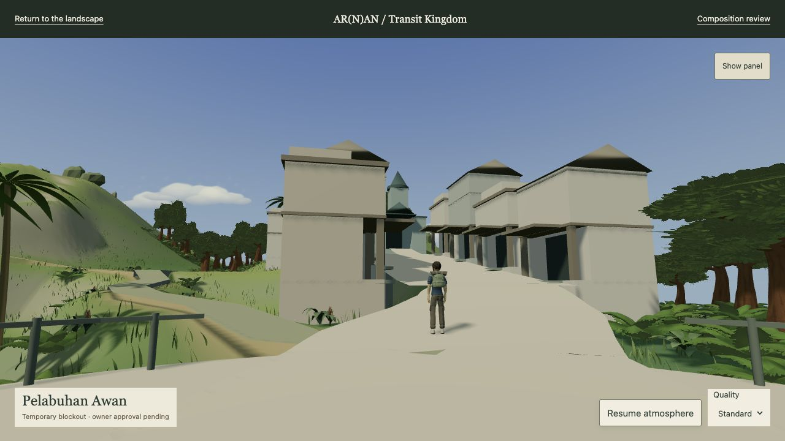
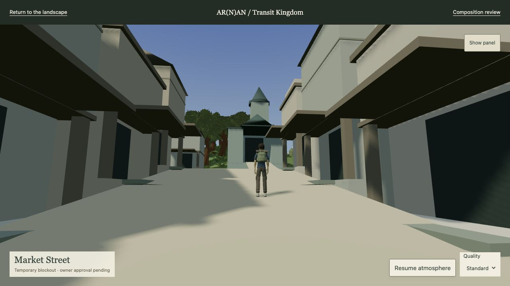
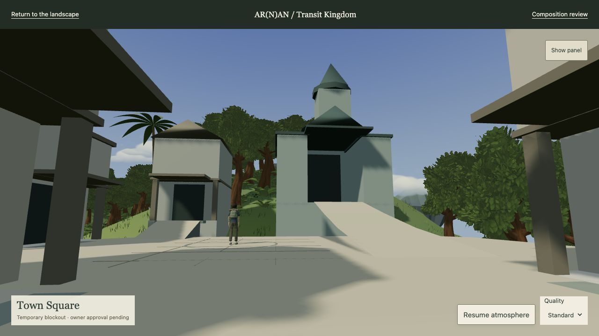
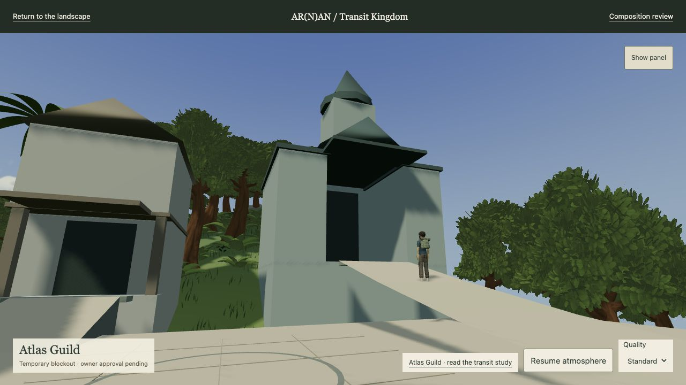
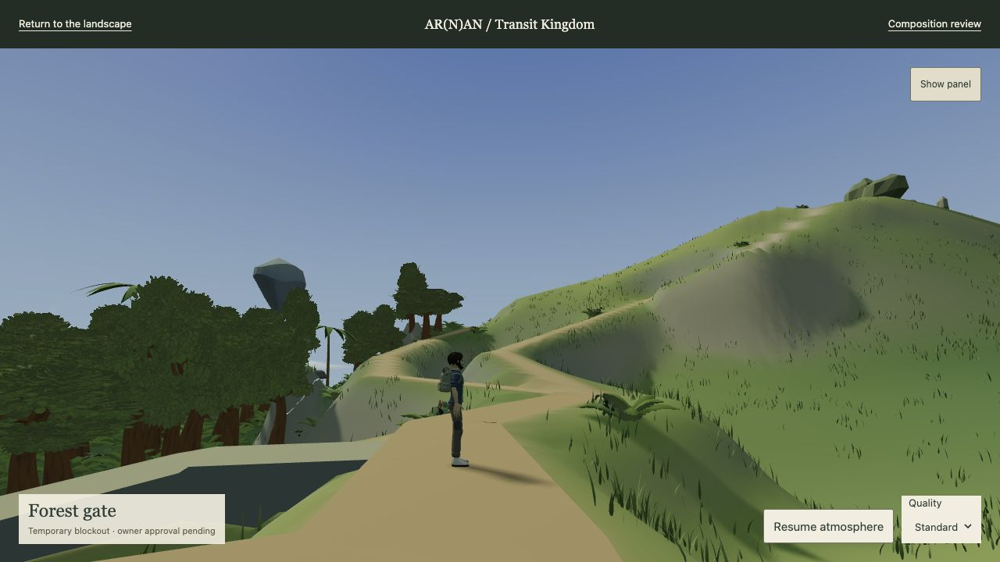
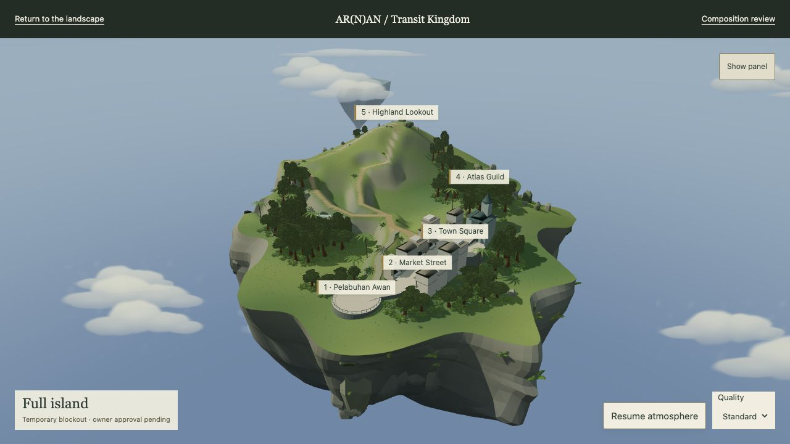
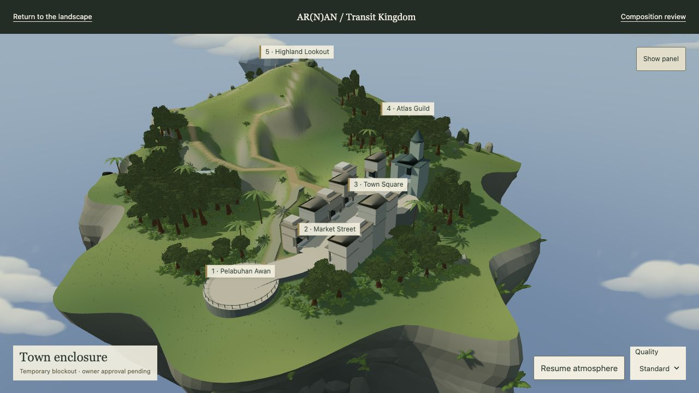
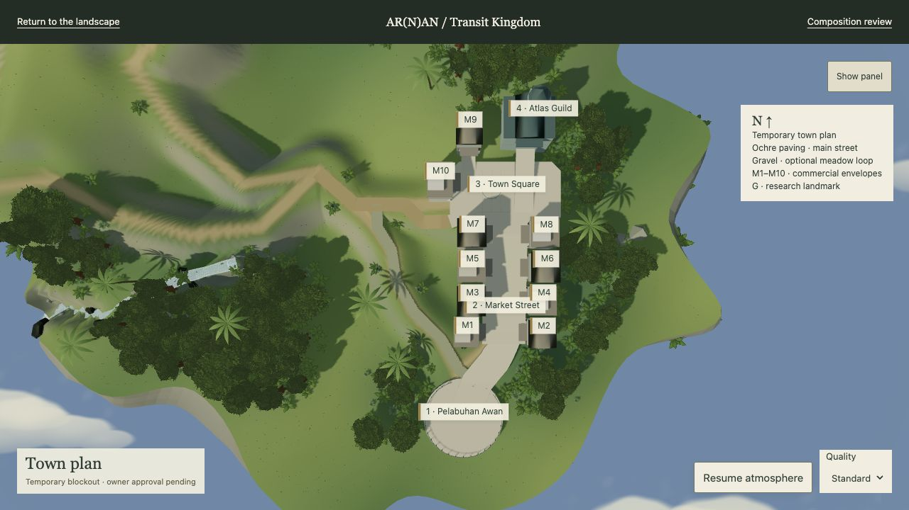
Comparison with the failed views
Four before/after pairs use identical absolute position, rotation, FOV and resolution. The old market/square cameras now look obliquely across the new arrangement; the new decisive views above stand on its actual route. Cloud phase and staged character can differ. Matching checks.
arrival · exact previous camera

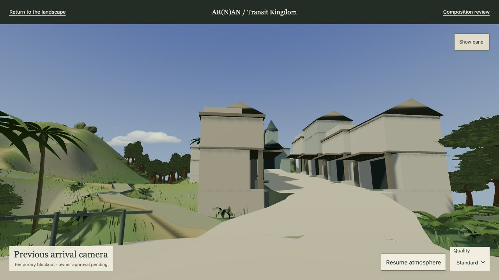
market · exact previous camera
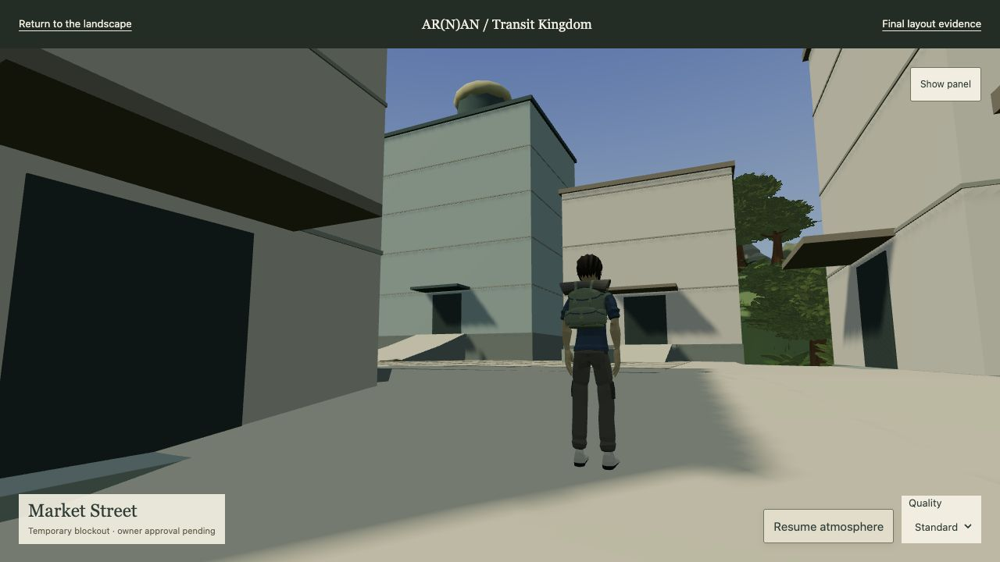
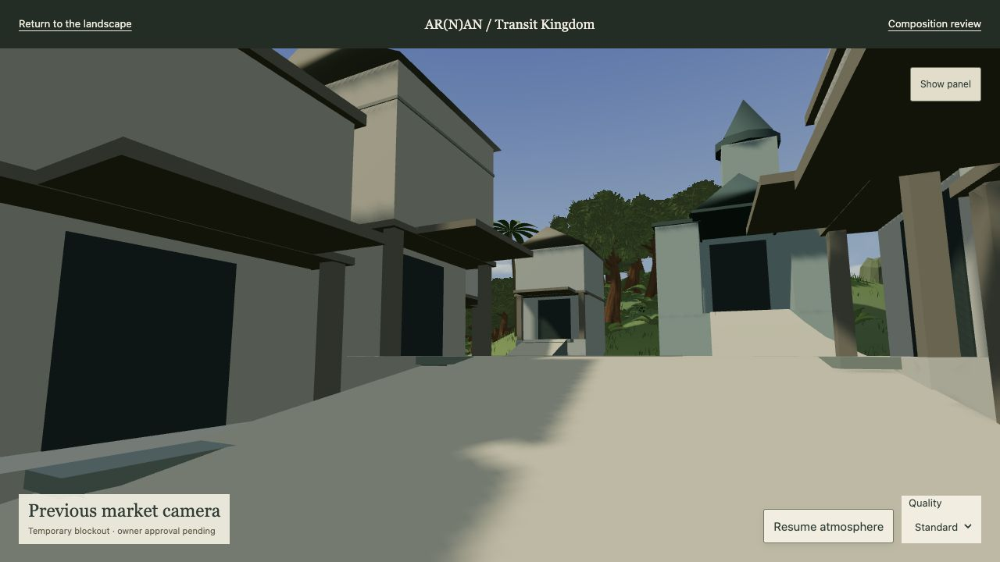
square · exact previous camera
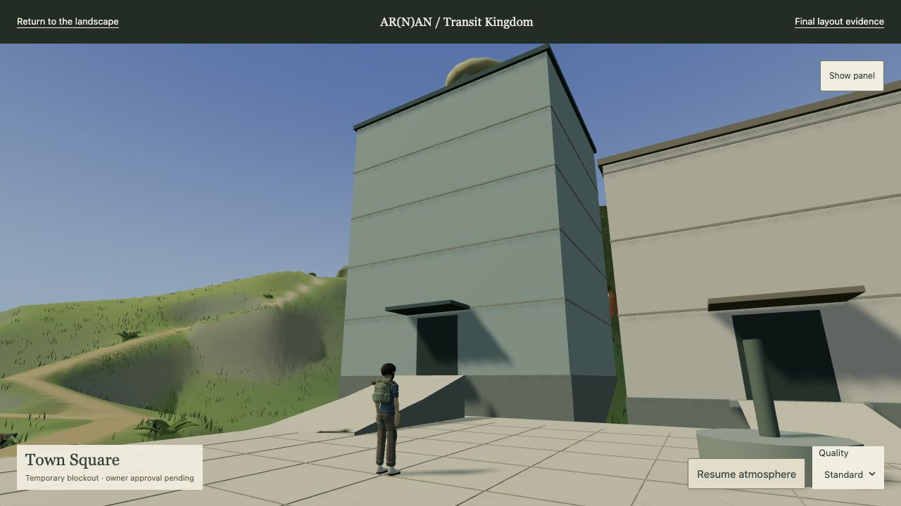
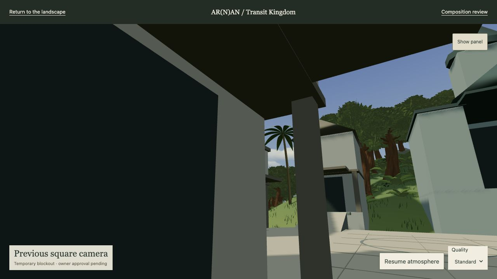
aerial · exact previous camera
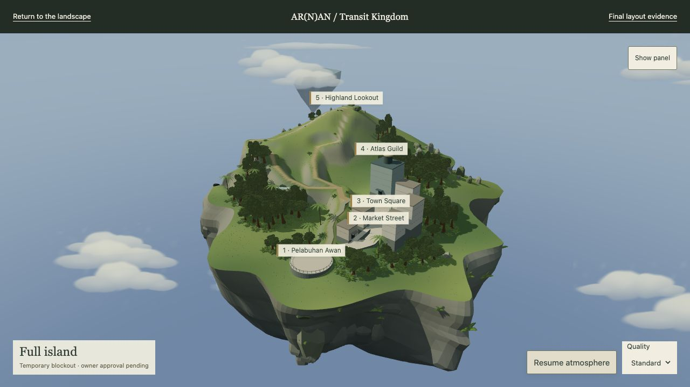
Walking evidence
Native keyboard input drives the existing character; bearing assistance changes heading only. One uninterrupted W/Shift+W traversal covers skyport → market → square → Guild → square → highland, with a Space jump and landing. Separate native checks cover the scenic return, meadow loop and all ten commercial entrance approaches. Unassisted turn/strafe/jump evidence is also saved. No guided check is presented as independent owner playtesting.
| Journey | Result | Actual travel | Moving time | Requested stationary time | Support error |
|---|---|---|---|---|---|
| Continuous arrival → market → square → Guild → highland | Complete | 224.8 m | 57.2 s | 0.000 s | 0.000 m |
| Highland → Cloudbreak → Town return | Complete | 199.2 m | 43.0 s | 0.000 s | 0.000 m |
| Optional meadow return to Skyport | Complete | 79.0 m | 37.6 s | 0.000 s | 0.000 m |
| Market frontage and square entrance circuit | Complete | 107.9 m | 24.7 s | 0.000 s | 0.000 m |
| Market Street → Town Square | Complete | 27.8 m | 13.3 s | 0.000 s | 0.000 m |
| Town Square → Atlas Guild | Complete | 16.8 m | 8.0 s | 0.000 s | 0.000 m |
Complete position/camera samples · Camera ray checks · Free controls · Third-person market · Guild traversal · Lookout arrival.


Actual terrain and clear widths
| Route | 3D metres | Min clear metres | Elevation metres | Max 3 m grade | Max 0.25 m rise |
|---|---|---|---|---|---|
| arrival | 22.5 | 6.6 | 17.1–19.1 | 17.9% | 4.4 cm |
| market | 28.3 | 8.0 | 19.1–22.6 | 17.1% | 4.3 cm |
| guild | 18.0 | 3.9 | 22.6–25.2 | 23.8% | 15.0 cm |
| east-frontage | 21.3 | 2.5 | 19.1–22.6 | 17.1% | 4.3 cm |
| garden-loop | 72.0 | 1.2 | 17.4–22.6 | 32.5% | 26.9 cm |
| ridge-connector | 39.9 | 1.5 | 20.6–22.6 | 32.5% | 8.1 cm |
| highland | 95.2 | 2.6 | 21.0–48.7 | 55.2% | 20.5 cm |
| scenic-return | 155.1 | 2.5 | 21.0–48.7 | 48.7% | 12.1 cm |
| west-frontage | 21.3 | 2.5 | 19.1–22.6 | 17.1% | 4.3 cm |
Width sampling is capped at nominal route width; subtract 0.68 m for capsule-centre span. Terrain support is sampled at 0.25 m, frontage cross sections at 0.05 m and plots at 0.5 m. Grade is rise/run, not accessibility certification. The existing steep highland is preserved. Every entrance faces connected public space and every plot clears its highest terrain sample. Full plot/entrance/sightline measurements · Schematic route diagram.

Technical checks and remaining limits
106 regressions pass. The static audit remains at 58 inherited findings; it has not been declared fixed. Production terrain, systems, source models and license archives are unchanged. No new GLBs, textures or dependencies. Tests · Inherited audit findings · Hash checks · Actual asset and geometry counts · Browser log.
Moving town sample: 600 frames, 150.4 fps, 11.2 ms p95; 93 draw calls and 1,114,449 triangles at the sampled view, 1280 × 658 buffer. These are view/session-specific rAF and renderer counters, not GPU timings. Town measurement · Ridge measurement.
The street's uphill section is deliberately terraced. Some downhill building backs still need up to 7.2 m of lower mass/support; this is unfinished architectural/structural work. Blank upper greybox faces, simple roofs and unprotected planning terrace edges remain. The Guild ramp is a gameplay reservation, not a finished civic stair. Landscape/sky materials were not changed to flatter the comparison.
Owner visual approval remains pending. No R0-B2 construction is authorized by these checks.